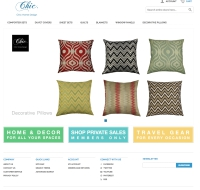
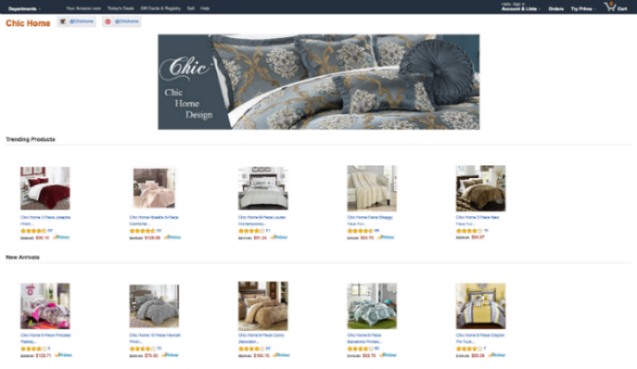

My role as an Ecommerce Coordinator
Coordinated asset requests and delivery. Provided administrative supports to online retail ecommerce store and daily operation. Assisted in analytics reporting using Amazon web service and microsoft office tools. Helped operation team to create great listings for the websites. Generated spreadsheets, modify images for product upload. Helped coordinate all website assets, site navigation, search and browse functionality and optimizing site selling tools. Comprehend and respond to all customer queries with immediate resolution to ensure customer satisfaction.
My role as a graphic designer
Assisted in loading web contents. Assisted with maintaining marketing calendar changes. Reviewed, imported and loaded content to website. Scanned, colored correct and formated website images. Reviewed, imported and loaded contents to website, and selling channel on Amazon.com. Generated spreadsheets, modified images for product upload.
This is one of their company's website which i assisted in web development. 
What had i learned in the valuable experience
Developed an ability to handle multiple projects and details simultaneously in a fast-paced environment. Be able to consistently meet deadlines. Be excellent in communication and problem-solving, technical understanding of E-commerce platform. Have solid ecommerce experience in retail business. Developed solid frondend web development skills, troubleshoot skills, photoshop and graphic design skills (Adobe Creative Suite), database management (MS Office tools, etc.), customer service skills.